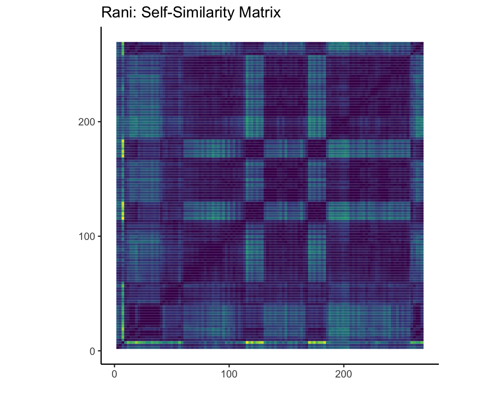

Introduction
An analysis of the Indian music
A year ago I stumbled upon the Indian indie music scene, which much to my delight, became one of my favourite sets of music to listen to. In exploring Indian indie music, I discovered two artists who I particularly quite enjoyed, and found rather off-beat. Thus, I have chosen to focus on these two artists, and explore some other related music to draw comparisons, understand their influences, and potentially speculate upon the links or postulated links.
The two Indian indie artists I have chosen are: Lifafa and MALFNKTION. Both are rather experimental with sounds, beats, instruments, and do draw from old Bollywood music to some extent (or have mentioned that theyve drawn inspiration from it). In this regard, I thought it would be rather interesting to **understand what part of the old Bollywood music they draw from, what similarities exist between the music, delve into certain specific songs by both indie artists, and ultimately even compare Lifafa and MALFNKTION.
My corpus isnt perfect, the proportion of Bollywood songs is much greater than Lifafa songs or MALFNKTION songs. The trouble with Lifafa is that he has a total of only 15 songs, thus making it hard for us to access a larger repertoire. Additionally, the Bollywood songs are chosen by me personally, and I have tried adding songs by artists who have influenced Lifafa. Therefore, there could be some issues in the selection of these songs, given that it has been chosen by a lay human being.
Before starting off, I would like to give a small glimpse into what the quintessential old school Bollywood film music sounds like: it has this grainy, smokey timbre to it (which is hard to explain in words, but one understands this best when listening to it). The male voice in these old Bollywood songs is usually a deep, crooney voice, which resembles Suryakants (Lifafa) voice. Due to this reason, most of the old Bollywood songs in my corpus are those with the same baritone as Lifafa. Lifafa cited certain artists from that era who served as influences, and those artists are primarily featured in the corpus. In addition to these, old Bollywood songs that have explicitly been cited as the inspiration/been included in music by these Indie aritsts are also in the corpus.
This song serves as a glimpse of the general sound of old Bollywood music:
My Corpus: An overview
This is a overview of the corpus, according to the categories present in the corpus at present. The categories in the corpus are: Lifafa, MALFNKTION and Old-Bollywood-Film-Songs. On the x-axis, we have valence, a Spotify feature, which describes how musically positive a track is (higher the valence, more positive a track is). On the y-axis, we have acousticness, wherein higher numbers imply more confidence that the track is acoustic (i.e.sound is not electronically modified).
What is interesting here is that most of the old Bollywood songs have small circles, representing very low speechiness, which is not the case because ALL songs in this category have spoken word. This is one of the first indications of an issue with Spotifys API. It is tuned to Western pop music mostly, and thus, there are issues with correctly identifying features in non-Western music. Another strange observation is that all the old Bollywood songs appear to have a very low valence - from my knowledge and listening of these songs this is not the case for all songs, and thus, there once again must be some issue with the API judging valence. One potential contributing factor to this could also be that the grainy sound accompanying this music could be coming in the way. Additionally, I noticed the same trend with mistakes in speechiness in the Lifafa and Peter Cat Recording Cos music - several of Lifafas songs do not have any speech, but the ones that do must have bigger circles, which they dont. However, MALFNKTIONs energy, valence and speechiness values appear more accurate, and also indicate some sort of a pattern (i.e, songs become more positive as speechiness increases, and in general, the energy level of his songs are quite high, and mostly above a certain point). It would be interesting to ask - why is it that the Spotify API works better on some artists and not on some in the non-Western music sphere?
Although the corpus overview has to be taken with a grain of salt owing to issues with the Spotify API, it does introduce another theme of this portfolio - what does and doesnt the Spotify API tell us about non-Western music? During my time using the Spotify API with non-Western music I had to constantly keep comparing what I felt and heard from the music and to what extent the API seemed to be covering it.
Lifafa: An overview
Over the past year, Lifafa has truly become one of my favourite artists, which makes him an essential star in my portfolio. At the moment, Lifafas body of work is not that large. This comes from the fact that Suryakant Sawhney (Lifafa is his artist name) only started this project a few years back and works on the whole process of music production by himself. While it does limit me from making more extensive comparisons with different music or his own repertoire, it is still interesting to make observations through the data offered by Spotify and see how that matches with my hearing of the song.
An important note in this graph: The size of the dots represent the popularity of the song . Unfortunately this was not represented in the interactive plot legend.
First off, songs from the album Jaago appear to be more popular due to being released much earlier and garnering more repeated hearings from loyal fans! However, what is interesting is that songs from SUPERPOWER 2020 are also equally popular, except three in particular. Interestingly, these 3 songs are lower in energy compared to all of Lifafas other songs, and also quite low in valence. This could indicate that Lifafas listeners appreciate energy in his music.
As for valence, another curious observation is that the album Jaago has songs spread across the whole range of valencies. However, the songs in SUPERPOWER 2020 have valencies ranging from only 0 to 0.4 and none beyond, as compared to Jaago. From my hearing of these albums, SUPERPOWER 2020 had lyrics and songs that oozed off sentiments towards political issues, especially the glum changes in the Indian landscape. Additionally, Lifafas song names also represented a sarcastic take on this. Hence, it could be the case that the low valence (i.e.sounding more negative) comes from the moroseness caused by situations in India, which comes out through his album.
My final word on Lifafa is that his compositions are unique in their own way and its interesting to experiment with Spotify features and see what his repertoire consists of. However, it will be even more interesting to track his growth as an artist and compare how his future songs are!
Lifafa through Chromagrams: Comparing his work through the chroma feature


Please scroll down! There are 4 chromagrams!
From the overarching analysis of all of Lifafas repertoire, I chose to firstly compare the most popular songs from each album (i.e.Nikamma from Jaago and Wahin Ka Wahin from SUPERPOWER 2020). The second comparison is between the two most different songs from both albums: Acche Din from SUPERPOWER 2020 (it was the song with least valence from this album as well as one of the least popular songs, overall) and Chaku Chidiya from Jaago, since that is the song with most valence. Additionally, Acche Dun has very low energy and Chaku Chidiya is at the higher end of that spectrum. I thought this would make for another interesting and stark comparison within Lifafas repertoire.
The following graphs are called Chromagrams - to make one, you add up the energy from each pitch class. Thus, chromagrams essentially represent how pitches are present and spread out across time in each track/music piece. In any chromagram, yellow represents a higher presence (or magnitude) of a particular pitch and blue represents a lower presence (and the green/colours in between represent the magnitudes in between).
Lifafa Chromagram Analysis: Firstly, the variations in the chromagram and the differences in certain pitches being of higher magnitudes represents how experimental Lifafa can be. For example, in Acche Din, you see a strong band of yellow in the C#/Db pitch class, and in Chaku Chidiya, you see a high magnitude of the F pitch class. From a brief view, it looks like the chromagrams of Wahin Ka Wahin and Nikamma are quite similar - there are no strong yellow shades in any pitch class (atleast not for a long span of time). There seem to be various pitches of moderate magnitudes in both these songs, which happen to be the most popular and of high energy and moderate valence. It could be that these songs dont have super (!) experimental sounds, as is the case with some of Lifafas other music. Nikamma, for one, could pass off as a more common lo-fi, vibe-y party song, which might make it more popular and akin to other more mainstream music.
Acche Din, in particular has a peculiar chromagram. The yellow at certain time points shows that energy is high in a certain pitch class. This could result in a very strong sound, which could make this song quite an acquired taste! Hence, the trend I see in this is, when there is more variation in pitches over timepoints, as opposed to one strong (perhaps peculiar sounding) pitch during time periods of the song, it seems to appeal more to the audience. However, from the perspective of creating experimental music, Lifafas play with pitch classes is interesting and exciting!
Lifafa vs His Inspiration - A close comparison using timbre


Lifafa gave an interview once which is quite instrumental to understanding his music and the theme of this portfolio. Lifafa used to listen to old-time singers called Mohammed Rafi and Mukesh (i.e.what his mother used to play!) and was also influenced by Hemant Kumar, another old-time singer, with the old-Bollywood crooney voice (which I hear in Lifafas voice too). In addition to this, Lifafa said that he was quite fascinated by the fuzzy acoustics of a pre-stereophonic sound era. This fuzzy sound is also present in some of Lifafas music, which makes it interesting to compare the old school Bollywood songs and Lifafas music. There could be issues with this since the Spotify API does not fare best with non-Western music, but it is still an interesting visualisation to draw up!
For this purpose, I will use a cepstrogram, which represents the timbre features. Timbre is essentially the texture of the music - or the perceived sound quality of the sound (Wikipedia). Timbre is what helps us distinguishes sounds. On the y-axis of the cepstrogram represents the features of a cepstrum (a cepstrum takes an audio signal and passes it through different filters) - there are 12 of these filters, and theyre called c01, c02, and so on until c12. And importantly, the c01 filter represents loudness.
This cepstrogram compares Laash by Lifafa and Ei Raat Tomar Amar by Hemant Kumar. The reason I chose Laash is because its one of the songs by Lifafa which is high in vocals (which is not always the case with his music) so it would be easiest to compare it to a Bollywood song which is high on vocals. And the reason for choosing Hemant Kumars Ei Raat Tomar Amar is because it, like Laash is rather sombre, and mellow (rather than happy and jumpy). While this is not the best way to choose music, I used my intuition to pick two songs which could potentially be compared. You can also hear the two songs here to see what you think of them and if this comparison seems like a plausible one!
Cepstrogram analysis: Surprisingly, there is a similarity in the cepstrograms - there are strong yellow shades in the first few filters (c01, c02, etc. are called filters, as I mentioned above!). If we exclude the first filter c01, we see that both Laash and Ei Raat Tomar Amar have similar green-yellow shades on the c02 cepstrum filter. This indicates some similarity, which could be rooted in the crooner voices of both artists. However, Lifafas song also contains the c03 and c0 timbre features (more than Hemant Kumar), which makes it different. This could be because of the other sounds in Lifafas music.
A more thorough analysis of Lifafas repertoire and more old Bollywood songs would have to be undertaken in order to understand how similar they actually are and arent. A resonating issue will always be that Lifafas songs have electronic beats and other background sounds that he is experimenting with, and this could make it tricker to understand the visualisations of musical features (like the ones we are using in this portfolio).
Lifafa vs.the Old Bollywood Crew: A broader analysis
Please scroll down this text too incase!
Through a cluster analysis, we will see which songs from the Lifafa repertoire and the Old Bollywood film songs have similarities. This will be done through a dendogram. A dendogram helps look at similarities between groups. The shortest lines (branches) on the dendogram represent most similarity and the ones which are longer/greater in distance represent most differences.
From the dendogram, the small clusters/pairs of songs seen (for e.g.Laash & Jaago OR Kahin Door Jab Di & Jane Woh Kaise Lo) like this in the dendogram, the pairs of similar songs do not show any intermingling between Lifafa and Old Bollywood songs. Each pair is either 2 Lifafa songs or 2 Old Bollywood songs. There is only one exception to this (see on the right-most side), where there is similarity between Lifafas Bewafa Hai Ghadi and Ei Raat Tomar Amar, but the branch theyre connected by is quite tall so there is not as much similarity indeed. If we move up the branches though, we could find pairs of Lifafa songs which are similar to some larger clusters/groups of old Bollywood songs, but the similarity is not that great. It is an interesting question then: is there a better way to explore potential similarities or are the similarities not traceable due to the Spotify API not being qualified to deal with such music?
Another interesting tip I would also give here is to return to Tab 2 on this website: My corpus: An overview. Once you go there, click on the MALFNKTION circle - this way the MALFNKTION song points will disappear (temporarily) and you can see an overview of how Lifafas songs compare to Old Bollywood songs on valence and acousticness. However, more throrough work has to be done to compare these two. Perhaps a method that can isolate the vocals would be very useful in this situation!
This is the set of songs I used to create this dendogram:
MALFNKTION: An overview
Here too - the size of the points represents popularity of the tracks.
MALFNKTION is another experimental indie artist, who more explicitly remixes old Bollywood songs - he has two in particular which very directly draw from old songs. In this portfolio, one major comparison will be between one of his songs that actually uses an old Bollywood song [Rani by MALFNKTION and Yaad Kiya Dil Ne]. MALFNKTIONs songs are sprawled all over the place in terms of valence and energy, representing his experimental nature. Unlike Lifafa however, not all of MALFNKTIONs songs have equal popularity. This could also be the case because Lifafa is more well established in the Indie music scence (also due to his presence in an indie band he is in).
There is no specific trend with respect to these variables/features (energy and valence) and popularity of a track.
For the MALFNKTION segment of this portfolio, I will be taking you through MALFNKTIONs most popular song, Rani and comparing it with Yaad Kiya Dil Ne (bites of which are in the song Rani! Rani is like a remixed version of this song, you could say). Have a listen here before we delve into the analyses! The analyses will be done based on tempo, chords, and more!
Tempograms: Rani vs.Yaad Kiya Dil Ne


The first analysis we will do will exploit the tempo features, through a tempogram. The tempograms between the two songs are extremely different, which suggests that the beats and experimental sounds in the remixed version (Rani) of the old Bollywood song does have a significant impact. However, what is interesting is that the general pattern seen in the song Yaad Kiya Dil Ne is reflected in the tempogram for the song Rani (which uses Yaad Kiya Dil Ne and adds a lot of experimental sounds to it). This can be seen in the following time ranges in Rani: (1) between 0 - 30 seconds, (2) 110-135 seconds, (3) 165-180 seconds and (4) at the very end.
In the song Rani, after 40 seconds, larger beat drop sounds start, which might influence the tempogram. The tempo in Yaad Kiya Dil Ne and Rani in the first 30 seconds though is rather similar. At around 120 seconds, Yaad Kiya Dil Ne shows up in the Rani song, which could explain the similarity of tempo there as well. A similar pattern is seen at 165-185 seconds. After that, beat drops and other sounds dominate (in the Rani tempogram). At the end, once again, the old school Bollywood film sound is faintly heard in Rani, which explains why the end of the tempograms possibly have similar patterns. Overall, there are reasons why these tempograms make sense, and it allows us to visualise where Rani has drawn from Yaad Kiya Dil Ne, which is very interesting.
Chordograms: Rani vs.Yaad Kiya Dil Ne
The aim here was essentially to compare the chordograms of the two songs and see if there were commonalities at the level of chords.
The chordograms show that there are similarities between the two songs at C minor and Eb major, since both have strong yellow shades in the chordograms. However, in general, the magnitudes are higher in the old Hindi song Yaad Kiya Dil Ne rather than the remixed experimental song, Rani, which may be attributable to the fact that Rani includes hints of this old song and has a lot of additional beats and such that are not in the original old song. The old song, Yaad Kiya Dil Ne, has more harmony than Rani and that could be represented by the higher magnitudes (brighter colours; yellow and the bright greens!) in the chordogram for Yaad Kiya Dil Ne.
Zooming into Rani: Self-similarity Matrix

Rani was the first MALFNKTION song I heard, owing to its popularity, and one that I still love the most among my Indie Indian playlists. Given my favouritism bias here, I thought it would be exciting to go more-in-depth into the song Rani. Additionally, it is a rather experimental piece in terms of the fusion of old Indian vocals (and that fuzzy pre-stereophonic sound) and beats thrown in. For this purpose, a self-similarity matrix (based on timbre) has been used to understand the song in more detail. I chose timbre because the sound quality of different sounds within the song itself differ vastly and it should ideally show in such a visualisation.
In a self-similarity matrix, yellow shows the difference and more blue shows similarity. Very slight hints of yellow are seen in the self-similarity matrix, indicating a lot of similarity within the song. This is a bit strange to me, given that there is a clash between the beats in the song and the old Hindi film music - and they have a completely different timbre. The beats have a sharper sound, while the old Indian film music has a very grainy typical old-school sound. It could perhaps be the issue that the Spotify API does not catch this, given that it works best with Western pop music. This could be one potential shortcoming of the API.
Lifafa (Jaago) vs.MALFNKTN (Hindustani Rascal): A comparison of experimental indie artists
Lifafas album Jaago and MALFNKTNs album Hindustani Rascal are both rather experimental - they both draw some inspiration from some old school Hindi music, and at the same time, add their own beats, instruments, etc, which is quite unique to them and makes for interesting comparisons between the two artists.
The pairs formed here again are 2 Lifafa songs or 2 MALFNKTION songs, therefore affirming that despite there experimental nature, there seem to be obvious features that make their songs similar to each other, yet generally unique!
Discussion: Lets wrap up!
The aims of this portfolio were to explore my favourite experimental indie artists in more depth, understand some of their songs at a deeper level, see how and where they drew inspiration from old Bollywood film music, and see how the Spotify API performs with non-Western music.
Through this exploration, we have seen that Lifafa and MALFNKTION experiment greatly with the energy levels and valencies in their music, and despite their experimental style, a dendogram can still show that their own songs are similar to each other, highlighting the fact that they have created a musical identity for themselves!
It was hard to track and trace the influence of the Bollywood songs on the Lifafa and MALFNKTION songs, but some similarities were seen and some speculations were made. However, I did notice that certain parts of the Spotify API did not accurately capture the features of some songs. I think the API had some trouble recognising features in old Bollywood songs, and I wonder if this is also due to old production of songs, or the fuzziness of these pre-stereophonic songs. There were definitely discrepancies between the actual song and what Spotify made of them, but it was an interesting comparison nonetheless since I could use my own ear and understanding to make sense of the visualisations.